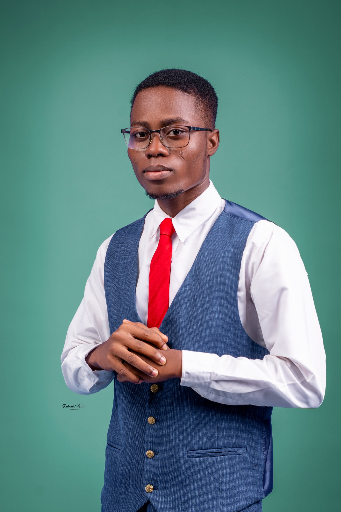
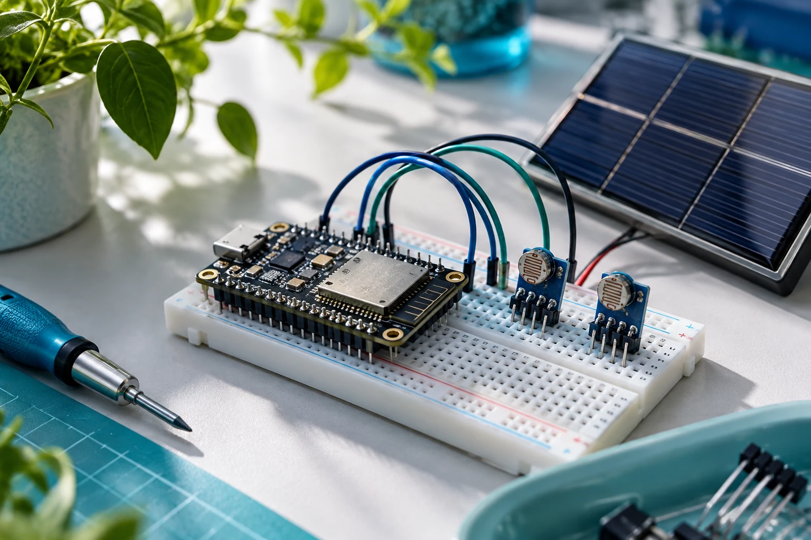
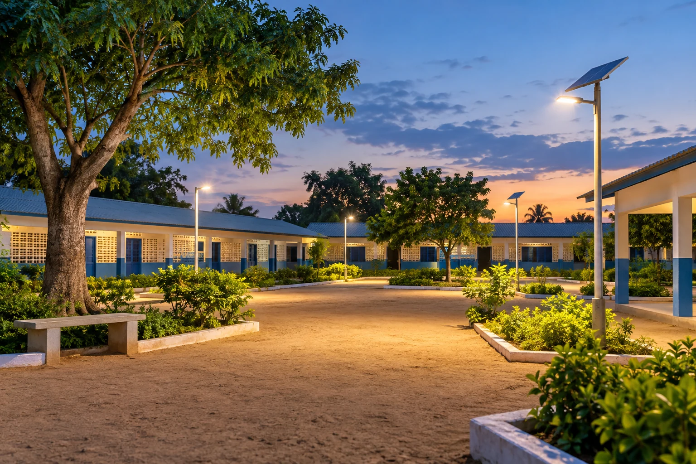
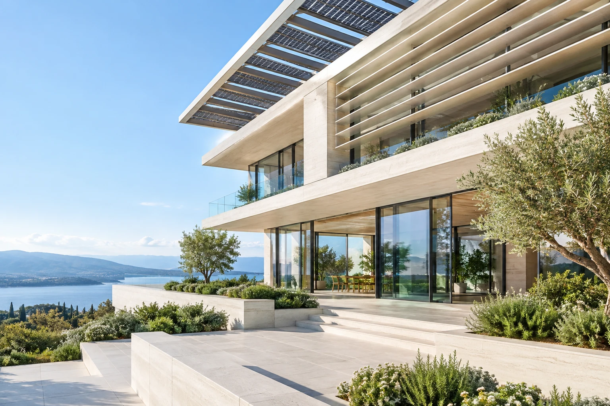
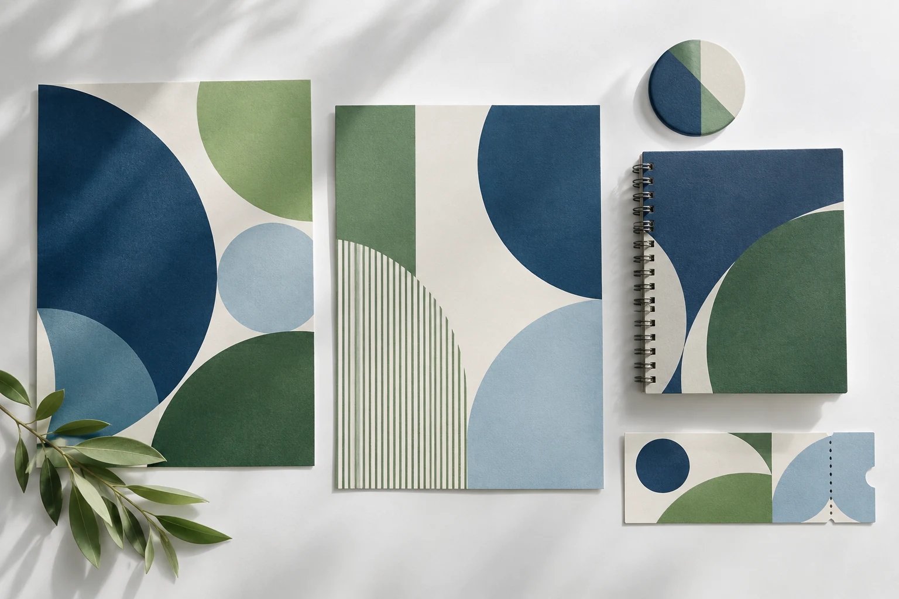

Académique
Confort thermique & qualité de l’air intérieur
Étude du confort thermique et de la qualité de l’air intérieur d’une salle de cours, en croisant mesures et perception des occupants.
Découvrir le projetJe suis Julien Donan ABLO, étudiant en Master Bâtiments Verts et Efficacité Énergétique à l’UM6P. Du solaire au bâtiment, du terrain à l’engagement associatif, je relie les idées à leur utilité.

Étude du confort thermique et de la qualité de l’air intérieur d’une salle de cours, en croisant mesures et perception des occupants.
Découvrir le projet
TechniqueConception d’un dispositif de mesure de la salissure des panneaux photovoltaïques autour d’un ESP32 et de capteurs de luminosité.
Découvrir le projet
CommunautaireUn projet d’espaces communautaires solaires et d’éducation durable à Djanglanmè, dans la commune de Toffo au Bénin.
Découvrir le projetImages des projets : illustrations générées par IA, et non photographies des réalisations. Les contenus décrivent le rôle et le contexte de chaque travail.
Ma formation en énergies renouvelables s’est construite au contact des installations, de la maintenance et du reconditionnement. Aujourd’hui, j’approfondis la simulation énergétique et le confort intérieur à l’UM6P.


Affiches, supports d’événements et communication : j’aime donner une forme claire aux idées. Le graphisme complète mon approche technique par le sens de la composition et de la transmission.
Visuel de présentation généré par IA. Mes créations originales seront ajoutées à cette sélection.
Je m’intéresse à la simulation énergétique, au confort intérieur et à la décarbonation, avec une ouverture particulière vers la France et la Belgique francophone.